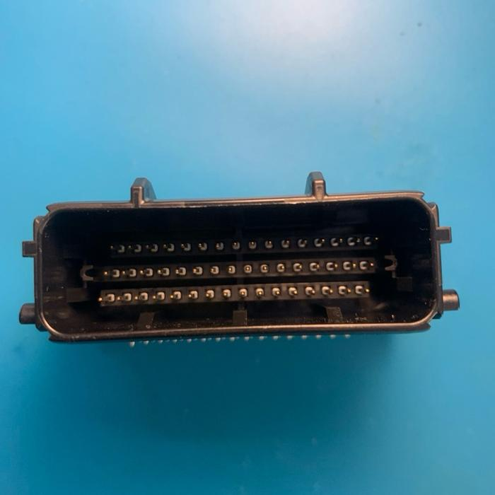

Mazduino Mini 6CH (v1.0 - v1.2)
Gambaran Umum
Mazduino Mini 6CH v1.0-v1.2 adalah unit kontrol mesin 6-channel yang kompak dirancang untuk digunakan dengan firmware rusEFI dan Speeduino. Dibangun di sekitar prosesor STM32F407VGT6 ARM 32-bit yang powerful, memberikan manajemen mesin komprehensif dalam faktor bentuk kompak yang cocok untuk mesin 6-silinder atau mesin 4-silinder dengan output arus tinggi tambahan.

Fitur Utama
- Input trigger utama untuk sensor CKP VR, hall atau optical
- Input trigger kedua untuk sensor CMP VR, hall atau optical
- 7 input analog (0-5V) untuk MAP, TPS, IAT, CLT, O2, dan 2 cadangan yang dapat digunakan untuk sensor tekanan bahan bakar atau sensor lainnya
- Catu daya 5V untuk sensor dengan perlindungan fuse internal
- 4 input digital pullup untuk AC Switch, VSS, Clutch, Launch Control
- 8x driver low-side arus tinggi 3A untuk injektor high-impedance, idle PWM (ISC), Boost, VVT dan lainnya
- 5x driver low-side arus rendah untuk relay utama, pompa bahan bakar, kompresor AC, kipas, dan kontrol tachometer
- 6x output 12V atau 5V untuk sinyal koil pengapian
- Dukungan untuk Modul VR Conditioner tambahan
- Dukungan untuk Modul Stepper Idle tambahan
- Prosesor 168 MHz ARM Cortex-M4
- Komunikasi data via CANbus
- Komunikasi data via USB Type-C
- Komunikasi Serial RX/TX
- Konektor otomotif 48-pin
- Kartu SD untuk data logging
Wiring dan Instalasi
Pin Mapping Konektor
Mazduino Mini 6CH menggunakan konektor ECU Yamaha 48-pin dengan pin assignment sebagai berikut:

Layout Konektor
1 2 3 4 5 6 7 8 9 10 11 12 13 14 15 16
17 18 19 20 21 22 23 24 25 26 27 28 29 30 31 32
33 34 35 36 37 38 39 40 41 42 43 44 45 46 47 48
Pin Assignment
| Pin | Fungsi | Deskripsi |
|---|---|---|
| 1 | 12V ECU | Catu daya utama ECU |
| 2 | IDLE1 | Output kontrol idle 1 |
| 3 | IDLE2 | Output kontrol idle 2 |
| 4 | CANH | CAN bus high |
| 5 | 5V | Output referensi 5V |
| 6 | AC Compressor | Kontrol kompresor AC |
| 7 | Fuel Pump | Kontrol relay pompa bahan bakar |
| 8 | PC13 | Akses pin MCU langsung |
| 9 | VR-1 | Input VR conditioner 1 |
| 10 | VR-2 | Input VR conditioner 2 |
| 11 | Stepper B2 | Motor stepper fase B2 |
| 12 | Stepper B1 | Motor stepper fase B1 |
| 13 | Stepper A1 | Motor stepper fase A1 |
| 14 | Stepper A2 | Motor stepper fase A2 |
| 15 | Injector 5 | Injektor 5 atau output arus tinggi cadangan |
| 16 | Injector 6 | Injektor 6 atau output arus tinggi cadangan |
| 17 | GND ECU | Ground ECU |
| 18 | Spare Analog 1 | Input analog cadangan 1 |
| 19 | VSS | Sensor kecepatan kendaraan |
| 20 | AC Switch | Input switch AC |
| 21 | CANL | CAN bus low |
| 22 | GND Sensor | Ground sensor |
| 23 | Fan | Kontrol relay kipas |
| 24 | Ignition 6 | Channel pengapian 6 |
| 25 | Ignition 5 | Channel pengapian 5 |
| 26 | Ignition 1 | Channel pengapian 1 |
| 27 | Ignition 2 | Channel pengapian 2 |
| 28 | Ignition 3 | Channel pengapian 3 |
| 29 | Ignition 4 | Channel pengapian 4 |
| 30 | TPS | Sensor posisi throttle |
| 31 | MAP | Tekanan absolut manifold |
| 32 | Injector 4 | Channel injektor 4 |
| 33 | Main Relay | Kontrol relay utama |
| 34 | GND Sensor | Ground sensor |
| 35 | Spare Analog 2 | Input analog cadangan 2 |
| 36 | Clutch | Input posisi kopling |
| 37 | GND Sensor | Ground sensor |
| 38 | GND Sensor | Ground sensor |
| 39 | Tacho | Output tachometer |
| 40 | Launch Control | Input launch control |
| 41 | VR1+ | Sensor VR 1 positif |
| 42 | VR2+ | Sensor VR 2 positif |
| 43 | O2 | Sensor oksigen (1-5V dari kontroler wideband) |
| 44 | IAT | Suhu udara masuk |
| 45 | CLT | Suhu coolant |
| 46 | Injector 2 | Channel injektor 2 |
| 47 | Injector 1 | Channel injektor 1 |
| 48 | Injector 3 | Channel injektor 3 |
Pin Mapping MCU
Untuk pengguna lanjutan dan pengembangan firmware, berikut adalah pin assignment STM32F407VGT6:
| Function | MCU Pin |
|---|---|
| Ignition Output 1 | PE15 |
| Ignition Output 2 | PE14 |
| Ignition Output 3 | PD13 |
| Ignition Output 4 | PE5 |
| Ignition Output 5 | PE2 |
| Ignition Output 6 | PE3 |
| Injection Output 1 | PD8 |
| Injection Output 2 | PB15 |
| Injection Output 3 | PB14 |
| Injection Output 4 | PB13 |
| Injection Output 5 | PD9 |
| Injection Output 6 | PE8 |
| MAP Sensor | PA0 |
| TPS | PA3 |
| IAT Sensor | PA5 |
| CLT Sensor | PA4 |
| O2 Sensor | PA1 |
| Battery/Voltage Ref | PA2 |
| Analog Spare Input 1 | PB0 |
| Analog Spare Input 2 | PB1 |
| AC Input | PB5 |
| Launch Control Input | PE13 |
| Clutch Input | PB10 |
| VSS | PD7 |
| CKP | PD3 |
| CMP | PD4 |
| Tacho | PC9 |
| Fuel Pump Relay | PC8 |
| FAN Relay | PA15 |
| AC Compressor Relay | PC7 |
| Main Relay | PC6 |
| Idle 1 | PD10 |
| Idle 2 | PE9 |
| Stepper DIR | PD12 |
| Stepper ENBL | PD14 |
| Stepper STEP | PD15 |
| TXD1 | PA9 |
| RXD1 | PA10 |
| TXD3 | PB10 |
| RXD3 | PB11 |
| TXCAN | PD1 |
| RXCAN | PD0 |
| SD CS | PD2 |
| SPI3 CLK | PC10 |
| SPI3 MISO | PC11 |
| SPI3 MOSI | PC12 |
Fitur Khusus
Dukungan VR Conditioner
- VR-1 & VR-2: Pin input untuk modul VR conditioner (DIP 8)
- VR1+ & VR2+: Input sensor VR positif
Kontrol Stepper Motor
- Stepper A1/A2: Output fase A untuk stepper motor (DRV8825)
- Stepper B1/B2: Output fase B untuk stepper motor
- Direction/Enable/Step: Sinyal kontrol untuk driver stepper
Konfigurasi Injector Fleksibel
Untuk mesin 4-silinder: - Injector 5 & 6: Dapat digunakan sebagai output arus tinggi cadangan - Aplikasi: Kontrol boost, kontrol VVT, injeksi air/methanol, dll.
Panduan Instalasi
- Pemasangan: Pasang ECU di lokasi yang tepat dengan pendinginan yang memadai
- Koneksi Daya: Hubungkan daya 12V (pin 1) dan ground (pin 17)
- Ground Sensor: Gunakan beberapa pin ground sensor (22, 34, 37, 38) untuk sinyal yang bersih
- Sensor Posisi Mesin: Hubungkan sensor CKP/CMP atau gunakan input VR sesuai kebutuhan
- Instalasi Modul: Pasang modul VR-Conditioner dan/atau Stepper jika diperlukan
- Verifikasi: Test semua koneksi sebelum startup awal
Catatan Wiring
- Multiple Ground: Gunakan semua pin ground yang tersedia untuk integritas sinyal optimal
- Referensi 5V: Pin 5 menyediakan referensi 5V untuk sensor yang memerlukannya
- Sensor O2: Pin 43 menerima sinyal 1-5V dari output analog kontroler wideband
- Sensor VR: Dapat menggunakan input digital atau input modul VR conditioner
- Konektor Yamaha: Konektor 48-pin grade otomotif profesional
- Kompatibilitas Wiring: Kompatibel dengan standar wiring Speeduino
- Referensi: Informasi wiring sensor tambahan di Speeduino Wiki
Dukungan dan Sumber Daya
Dokumentasi
- Datasheet STM32F407VGT6: Informasi lengkap tentang MCU
- Manual Referensi: Dokumentasi pin mapping dan konfigurasi khusus
- Wiring Diagram: Diagram lengkap untuk instalasi
- TunerStudio Configuration: File konfigurasi siap pakai untuk Speeduino
File Firmware & Konfigurasi
- Halaman Download - Dapatkan firmware rusEFI terbaru dan file konfigurasi TunerStudio
- Dukungan penuh 6-channel dengan fitur-fitur canggih
- Konfigurasi pin mapping khusus sudah disertakan
- Kompatibel dengan firmware rusEFI dan Speeduino
Dukungan Modul
Modul VR-Conditioner
- Package DIP 8: Instalasi dan penggantian yang mudah
- Dukungan Sensor VR: Mengkonversi sinyal VR ke digital (pin 9, 10)
- Signal Conditioning: Sinyal trigger yang bersih dan andal
- Kompatibilitas: Bekerja dengan berbagai jenis sensor VR
Modul Stepper Motor
- Driver DRV8825: Kontrol stepper berperforma tinggi
- Idle Air Control: Manajemen kecepatan idle yang presisi (pin 11-14)
- Integrasi Mudah: Desain modul plug-and-play
- Operasi Andal: Komponen grade otomotif
Catatan Penting
Persyaratan Sistem Pengapian
- Smart Coils: Koneksi langsung didukung
- Dump Coils: IGBT eksternal diperlukan untuk operasi yang tepat
- Pemilihan Coil: Pilih jenis coil yang sesuai untuk aplikasi Anda
- Keamanan: Driver eksternal yang tepat penting untuk sistem dump coil
File Firmware & Konfigurasi
- Halaman Download - Dapatkan firmware rusEFI terbaru dan file konfigurasi TunerStudio
- Dukungan penuh 6-channel dengan fitur-fitur canggih
- Konfigurasi pin mapping khusus sudah disertakan
- Kompatibel dengan firmware rusEFI